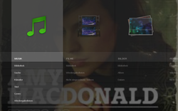
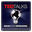
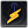

Moovida
Archivierte Anleitung
Dieser Artikel wurde archiviert, da er - oder Teile daraus - nur noch unter einer älteren Ubuntu-Version nutzbar ist. Diese Anleitung wird vom Wiki-Team weder auf Richtigkeit überprüft noch anderweitig gepflegt. Zusätzlich wurde der Artikel für weitere Änderungen gesperrt.
Zum Verständnis dieses Artikels sind folgende Seiten hilfreich:
Moovida (vormals "Elisa Media Center") ist ein Programm zur Verwaltung von Video-, Audio- und Bilddateien. Es verwaltet lokale Videos auf der Festplatte oder greift direkt auf Online-Videos und -Musik u.a. bei YouTube zu. Dabei unterstützt Moovida hohe Auflösungen (HD) und spielt Videos in den Formaten DivX, MKV, FLV, H.264, MOV oder OGG ab. Bilder und Fotos können mit Moovida betrachtet werden, sowohl lokal als auch direkt aus einem Flickr-  oder Pikeo-Account
oder Pikeo-Account  inklusive einer animierten Diaschau. Auch die Musiksammlung kann mit Moovida verwaltet und organisiert werden. Weiter werden Internetradio, Playlisten und diverse Plugins unterstützt.
inklusive einer animierten Diaschau. Auch die Musiksammlung kann mit Moovida verwaltet und organisiert werden. Weiter werden Internetradio, Playlisten und diverse Plugins unterstützt.
Moovida Pro war die kommerzielle Variante, welche diverse lizenzrechtlich geschützte Audio- und Videoformate mitbrachte und u.a. die Wiedergabe von DVDs unterstützte. Das Programm ist nicht mehr verfügbar. Eine (kommerzielle) Alternative ist der ONEPLAY DVD Player.
|  |
| Moovida |
Installation¶
Moovida kann nur noch für Ubuntu 12.04 über folgendes Paket installiert [1] werden:
moovida (universe)
 mit apturl
mit apturl
Paketliste zum Kopieren:
sudo apt-get install moovida
sudo aptitude install moovida
Bedienung¶
Das Programm startet mit deutscher Programmoberfläche.
Einstellungen¶
Moovida sucht automatisch im Homeverzeichnis nach vorhandenen Medien. Die Albumcover und die Portraits der Künstler sind auch gleich mit dabei. Es können jedoch auch manuell Ordner festgelegt werden; dazu muss allerdings die Konfigurationsdatei moovida.conf im versteckten Verzeichnis ~/.moovida bearbeitet werden. Die Orte sind in der Sektion "[directories]" unter
video = [u'/home/<user>/Videos'] pictures = [u'/home/<user>/Bilder'] music = [u'/home/<user>/Musik']
angegeben; hier können auch andere Pfade angegeben werden.
In der Rubrik "[frontend1]" kann man einstellen, in welcher Größe das Programmfenster starten soll. Steht "start_fullscreen" auf "1", dann startet das Programm im Vollbildmodus. Steht hier dagegen eine "0", dann startet es in der angegebenen Größe.
Quellen¶
Unter "Geräte & Freigaben" kann auf der System-Festplatte, externen Geräten wie USB-Sticks oder Festplatten anderer Computer nach gewünschten Medien gesucht und diese können abgespielt werden. Dauerhafte Quellen können hier auch entsprechend festgelegt werden.
Benutzung mit iPod¶
Das Zusatzmodul für iPod erlaubt es, die Verzeichnisstruktur eines angeschlossenen iPod zu durchsuchen und Musikstücke über Moovida direkt von dem Gerät abzuspielen. Damit Moovida diese Funktionen unterstützt, müssen vor der Installation des Programms die folgenden Pakete installiert sein:
libgpod4
python-gpod
python-dbus
mit apturl
Paketliste zum Kopieren:
sudo apt-get install libgpod4 python-gpod python-dbus
sudo aptitude install libgpod4 python-gpod python-dbus
Der iPod wird dann unter den Geräten angezeigt und kann aufgerufen werden. Allerdings lassen sich nur Titel abspielen, aber nicht auf den Player kopieren.
Internetmedien¶
Medien wie Musik, Videos, Bilder und Radio werden in der Rubrik "Internetmedien" je nach Wunsch angewählt.
Moovida beenden¶
Um Moovida zu beenden, begibt man sich in die Rubrik "Einstellungen" und wählt dann per ⏎ "Moovida beenden". Man kann den Vollbildmodus auch per Esc verlassen und dann das Fenster wie gewohnt schließen.
Kurzbefehle¶
Moovida kann komplett per Tastatur gesteuert werden. Wem dies zu kompliziert ist, kann auch die Maus verwenden, welche in Moovida immer aktiv ist.
| Kurzbefehle | |||
| Taste(n) | Funktion | Taste(n) | Funktion |
| Stop | Strg + → | vorspulen | |
| M | Pause/Play | Strg + ← | zurückspulen |
| C | nächster Titel | ↑ | lauter |
| X | vorheriger Titel | ↓ | leiser |
| ⌫ | zurück | Esc | Minimiert Moovida |
Erweiterungen¶
Plugins für Moovida werden in der Rubrik "Plugins" unter "Bibliothek" aktiviert. Weitere Plugins können unter der selben Rubrik "Plugins -> Verfügbare Plugins" installiert und anschließend in der "Plugin-Bibliothek" aktiviert werden. Unter Updates wird nach Updates für Moovida und dessen Plugins gesucht. In der Rubrik "Einstellungen" können die Plugins verwaltet werden.
| Folgende Plugins werden zur Verfügung gestellt | ||
| Icon | Name | Beschreibung |
|  | TED | Neueste Nachrichten lesen |
RTBF  | Französischsprachiger Fernsehsender | |
| Pikeo | Zeigt die Online-Bilder von Pikeo an | |
| Balzac | Spanische Web TV-Serien über Lebensstil und Neuheiten | |
| Jamendo | Teile deine Musik mit anderem im Internet | |
| Movie Trailers | Spielt die aktuellsten Kino-Trailer ab | |
| Flickr photo sharing | Zeigt die Online-Bilder von flickr an | |
|  | SHOUTcast Internet radio | Internetradio |
| deviantART artistic creations | Durchsucht die Kreationen der internationalen künstlerischen Gemeinde | |
 | GStreamer additional media codecs | Gstreamer Codecs |
| Youtube videos | Sucht Videos auf Youtube und spielt diese ab | |
LIRC-Unterstützung¶
Lirc bietet die Möglichkeit, Moodiva per Fernsteuerung über Infrarot oder Bluetooth zu bedienen. Dies kann zum Beispiel mit Hilfe eines Mobiltelefons geschehen. Um LIRC-Unterstützung für Moovida zu ermöglichen, müssen vor der Installation des Programms die folgenden Pakete installiert werden:
lirc
liblircclient0
python-pylirc
mit apturl
Paketliste zum Kopieren:
sudo apt-get install lirc liblircclient0 python-pylirc
sudo aptitude install lirc liblircclient0 python-pylirc
Um eine Fernbedienung in Moovida nutzen zu können, muss eine .map Datei in ~/.moovida/ mit der Tastenzuordnung erstellt werden. z.B remote.map
Die .map-Datei ist nur eine Textdatei mit einer Zeile für jeden Taste der Fernbedienung
PHILIPS_RC-5 0000000000010120 KEY_OK PHILIPS_RC-5 0000000000010121 KEY_MENU PHILIPS_RC-5 0000000000010122 KEY_PLAY PHILIPS_RC-5 0000000000010124 KEY_STOP PHILIPS_RC-5 0000000000010128 KEY_EXIT
Das erste Feld ist der Name der Fernbedienung, das zweite der Tastencode, der über irw ermittelt werden kann, das dritte Feld ist die Aktion, die durchgeführt werden soll.
Hier eine Liste der möglichen Aktionen:
KEY_GO_UP, KEY_GO_DOWN, KEY_GO_LEFT, KEY_GO_RIGHT, KEY_OK, KEY_MENU, KEY_DVD_MENU, KEY_EXIT, KEY_PLAY, KEY_PAUSE, KEY_PLAY_PAUSE, KEY_STOP, KEY_INC_PLAYBACK_SPEED, KEY_DEC_PLAYBACK_SPEED, KEY_SEEK_FORWARD, KEY_SEEK_BACKWARD, KEY_MUTE, KEY_VOL_UP, KEY_VOL_DOWN, KEY_NEXT, KEY_PREVIOUS, KEY_PAGE_UP, KEY_PAGE_DOWN, KEY_ESCAPE, KEY_F11, KEY_TAB
KEY_MENU ist die ⌫ -Taste
KEY_*
* ist durch einen Buchstaben oder durch eine Zahl zu ersetzen.
Anschließend muss in der moodiva.conf in einem Editor noch in der Sektion
[lirc.lirc_input:LircInput]
der richte Pfad zur remote.map eingetragen werden.
Musik-Visualisierung¶
Damit man bei der Musikwiedergabe nicht nur einen schwarzen Bildschirm zu sehen bekommt, sollten die folgenden Pakete installiert werden:
libvisual-0.4-0
libvisual-0.4-plugins
mit apturl
Paketliste zum Kopieren:
sudo apt-get install libvisual-0.4-0 libvisual-0.4-plugins
sudo aptitude install libvisual-0.4-0 libvisual-0.4-plugins
Die Visualisierung kann über die Konfigurationsdatei angepasst werden. In der Zeile visualisation = 'libvisual_jess' gibt jess die verwendete Visualisierung an, die z.B. durch infinite oder corona ersetzt werden kann. Eine Übersicht der vorhandenen Visualisierungen liefert z.B. Amarok.
- Erstellt mit Inyoka
-
 2004 – 2017 ubuntuusers.de • Einige Rechte vorbehalten
2004 – 2017 ubuntuusers.de • Einige Rechte vorbehalten
Lizenz • Kontakt • Datenschutz • Impressum • Serverstatus -
Serverhousing gespendet von